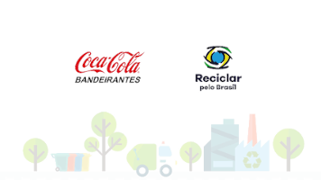
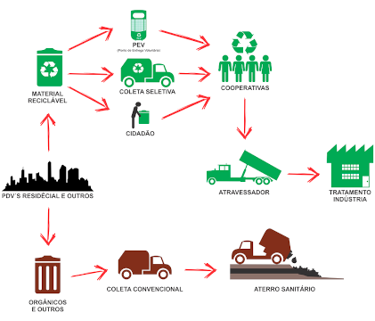

O futuro da reciclagem no Brasil

Em outubro de 2017, a parceria Ambev/Coca-Cola Brasil lançou um programa conjunto de
reciclagem, o Reciclar pelo Brasil. A plataforma também tem participação da Associação
Nacional dos Catadores e Catadoras de Materiais Recicláveis (Ancat). Inicialmente, era
integrado por 110 cooperativas e mais de 2500 cooperados, estendendo-se por 61 cidades
do Brasil, triando 41 mil toneladas de material reciclado até então.

Como 'Reciclar pelo Brasil' funciona
Em novembro de 2018, o projeto ganhou a participação das empresas Nestlé e Vigor e
ampliou de 110 para 160 o número de cooperativas que recebem apoio, em 17 Estados,
beneficiando 3 mil catadores de recicláveis em 71 cidades.
“Nesta nova fase, com um aporte de 25% a mais de investimento, vamos gerar 45% mais
impacto positivo”, diz Thais Vojvodic, gerente de sustentabilidade da Coca-Cola Brasil."